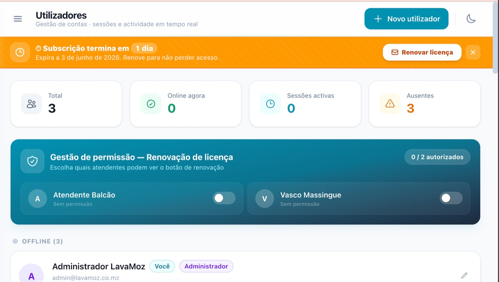
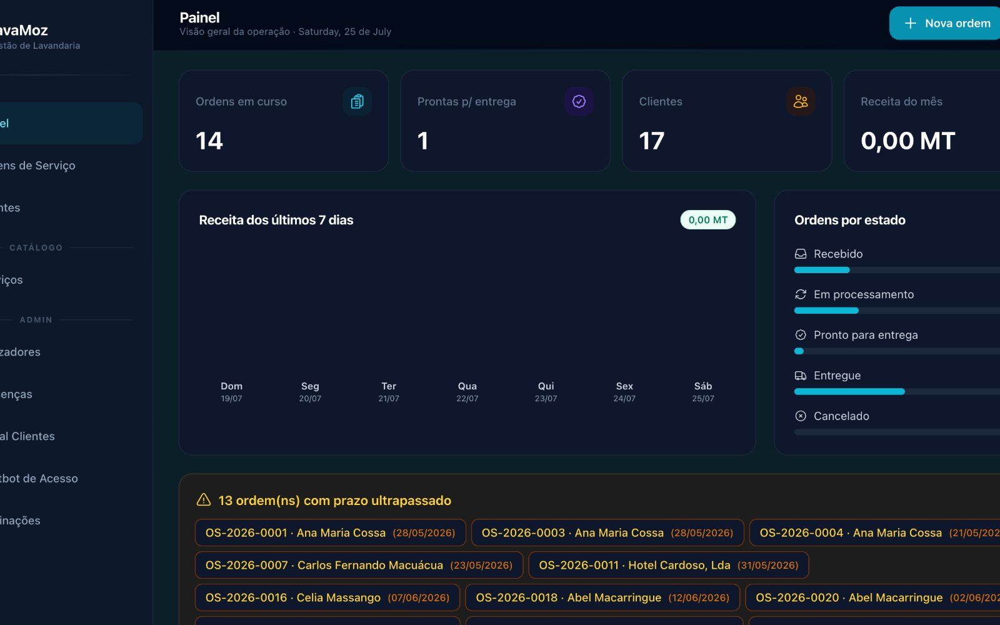
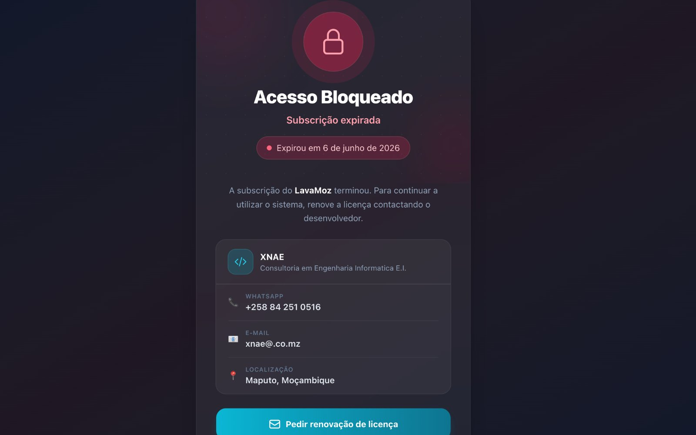

LavaMoz
ServiçosPlataforma de gestão de serviços com assistente virtual integrado. O chatbot atende clientes em linguagem natural e encaminha pedidos directamente para o fluxo operacional, sem passar por atendimento manual.
Laravel 12PostgreSQL
Claude APIChatbot